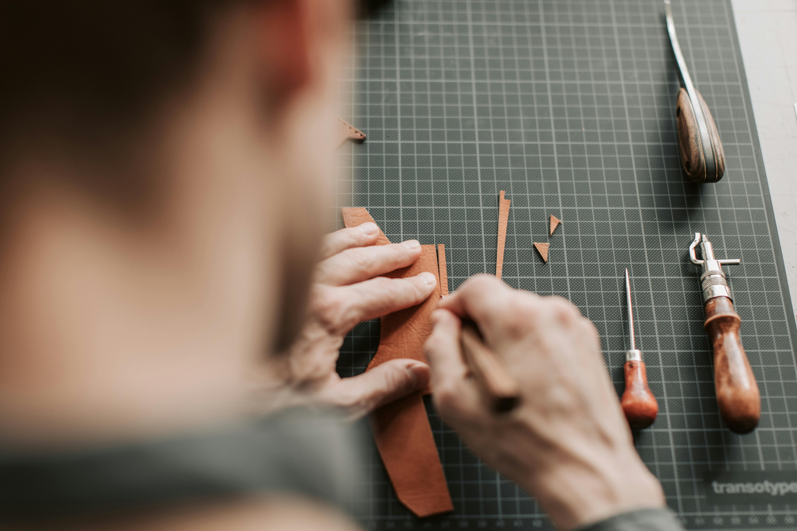

Forjados uno a uno por Gonzalo Londero.
Acero de primera, maderas nobles —
piezas que duran generaciones.

Gonzalo Londero es un maestro cuchillero de Quimilí, Santiago del Estero. Más de una década forjando piezas únicas a mano — lo que empezó como pasión se convirtió en un oficio de precisión y respeto profundo por el material.
Cada cuchillo lleva horas de trabajo silencioso: el golpe preciso del martillo sobre el acero al rojo vivo, el lijado paciente del mango, el afilado final que convierte el metal bruto en un instrumento verdadero.
Las piezas de GL llegan a toda Argentina y al exterior. Algunas viajan a Alemania, otras recorren el país para quienes entienden que lo bueno no se fabrica en serie.
Cada especie tiene su carácter. Todas seleccionadas a mano por dureza, veta y belleza.
Cada paso es manual. Cada decisión es de Gonzalo. No existe la pieza idéntica.
"No hay catálogo.
Hay conversación.
Cada pieza empieza con lo que necesitás."— Gonzalo Londero · Maestro cuchillero · Quimilí, Santiago del Estero